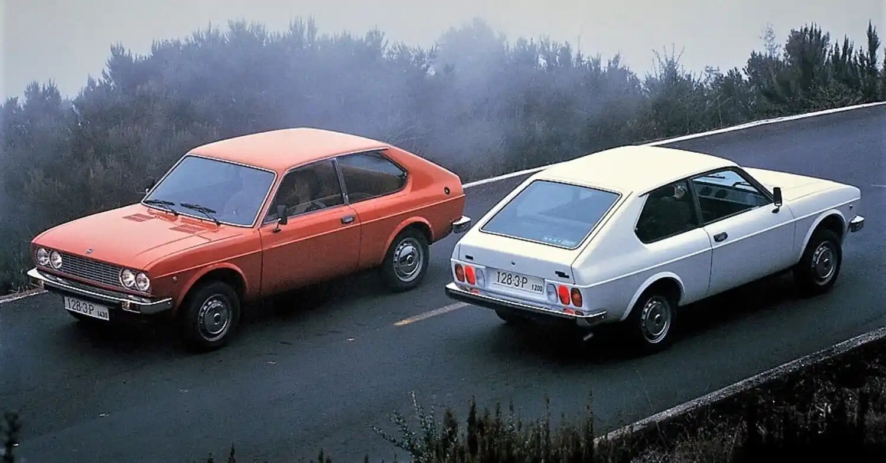

La comercialització per part de SEAT del 128 és una cosa que pot semblar sorprenent, fins i tot avui. Es podria pensar que no era molt raonable tenint en compte el recent llançament del "1200 Sport" tot just un any abans i donats els seus similars segments i característiques. És indubtable que tots dos models es van canibalitzar entre si.
Els motius de SEAT per comercialitzar el 128 3p. cal buscar-los fora de les nostres fronteres. SEAT ja no només fabricava automòbils FIAT sota llicència, havia evolucionat, havia desenvolupat la capacitat d'"adequar" els models italians a les necessitats i gustos espanyols, amb els SEAT 1400C, SEAT 800 i SEAT 850 4 portes com a mostra.
Aquesta evolució, va continuar obrint mercat fora de les nostres fronteres, amb números gens menyspreables. El desenvolupament del SEAT 133 va suposar una altra fita, obtenint nombroses i favorables crítiques tot i ser un model desfasat i periclitado. La creació del “1200 Sport” va suposar el gran recolzament a la imatge internacional de SEAT.